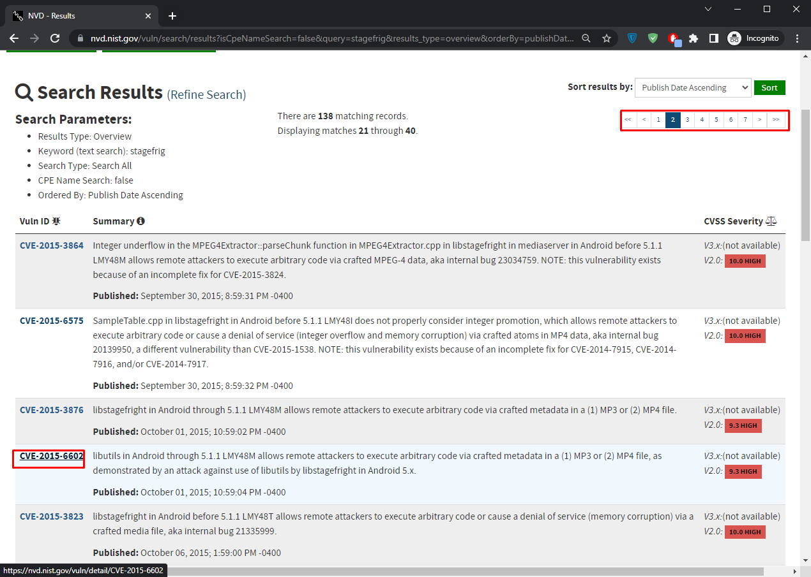
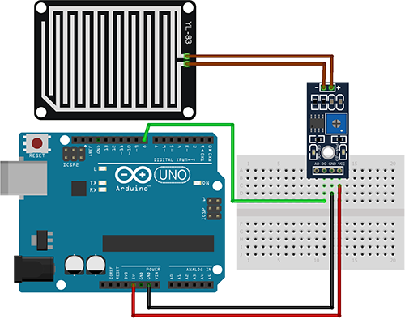

About Me
I was born on March 2, 2002, in London, United Kingdom. Shortly after my birth, my family relocated to North Cyprus. Currently, I am a 21-year-old student pursuing a degree in information technology at Eastern Mediterranean University.
Cyber Security
Introduction of Cyber Security
Cybersecurity refers to the practice of protecting computer systems, networks, and data from unauthorized access,
theft, damage, and other cyber threats. It involves implementing measures and technologies to ensure the confidentiality,
integrity, and availability of information in digital form. Cybersecurity aims to prevent unauthorized access to sensitive data,
safeguard against malware and viruses, detect and respond to security incidents, and maintain the overall security posture of an
organization or individual. It encompasses various strategies, including the use of firewalls, encryption, authentication, intrusion
detection systems, and security awareness training, among others, to mitigate risks and ensure the security of digital assets.
1-Scanning Activity
Scanning tools refer to software applications or utilities designed to probe, analyze, and gather information about computer networks, systems, or applications for security assessment purposes.
Traceroute: Determines the number of hops from your machine to the assigned website.
Dig: Retrieves the main nameservers for the website.
Nslookup: Retrieves information about the website, including the MX record.
WHOIS lookup: Obtains the registered contact information for the website.
Questions
How many hops from your machine to your assigned website?
-30 hops max
Which step causes the biggest delay in the route? What is the average duration of thatdelay?
-first step with 0.144ms
What are the main nameservers for the website?
-a.root-servers.net nstld.verisign-grs.com
Who is the registered contact?
-Internet Assigned Numbers Authority (IANA)
What is the MX record for the website?
-I got an error as "server can't find"
Where is the website hosted?
-Los Angeles
Reflection
While doing this activity I learn that using scanning tools will be very beneficial for any kind of cyber activity and also I really enjoyed extracting usefull information with these tools. However, I could manage to find MX records. I tried couple of different domains but I always got the same error "server can't find".
2-Honeypot
A honeypot is a security mechanism that simulates a vulnerable system or network to lure potential attackers and gather information about their tactics and techniques.
ifconfig: is a command used to display the network interface configuration information on a Unix-like operating system.
./pentbox.rb: is a command that is referencing the execution of a Ruby script named "pentbox.rb" within the current directory.
Setting up the Honeypot
Connection Error
Honeypot notification alert us that an intruder has been caught!
Reflection
I always heard about honeypots but I was never understand them fully. Working on this activity helped me to really understand what is honeypot and why we are using it. It turns out that it was a bait for intuders to learn their ways and improve our system. while doing this project I realise that I didnt have the pentbox dictionary in my system. I downloaded it from here.
3-DDOS Attack
A DDoS (Distributed Denial of Service) attack is a malicious act in which multiple compromised computers overwhelm a target system with an excessive amount of traffic, rendering it inaccessible to legitimate users.
ping command can be used to find the ip address of desired domain
use auxiliary/dos/tcp/synflood: is a module for SYN flood attacks, which inundate target systems with a high volume of SYN packets. (metasploit used in this picture)
"Wireshark eth0" captures and analyzes network traffic.
This site can't be reached.
Reflection
Well in this activity I realize that doing denial of service attack was way more easy then I thought. I gain a bit of knowledge about metasploit and wireshark applications while working on this activity.
4-Digitalisation
What is a 'fully digital enterprise'?
-A fully digital enterprise is an organization that has embraced digital technologies across all its operations, processes, and interactions. It relies on digital tools to automate and optimize its business processes, uses data analytics for decision-making, provides a seamless digital experience to customers, adapts quickly to market changes, fosters innovation, promotes collaboration, and prioritizes cybersecurity and data privacy. By going digital, businesses can streamline operations, improve efficiency, enhance customer experiences, and gain a competitive advantage.
What are the cyber Security challenges/concerns with a fully digital enterprise?
-The cybersecurity challenges in a fully digital enterprise include data breaches, malware attacks, insider threats, phishing, cloud security risks, compliance requirements, and a shortage of skilled cybersecurity professionals.
-Data breaches: The risk of data breaches increases as more data is generated and stored digitally. Cybercriminals may attempt to gain unauthorized access to sensitive customer information, intellectual property, or financial data, leading to financial losses and reputational damage.
-Malware and ransomware attacks: Digital enterprises are vulnerable to malware and ransomware attacks, where malicious software is used to disrupt operations, steal data, or demand a ransom. Such attacks can cripple systems, cause financial losses, and disrupt business continuity.
-Insider threats: While digital transformation brings numerous benefits, it also increases the risk of insider threats. Employees or contractors with access to sensitive data may intentionally or unintentionally misuse or leak it, leading to data breaches or other security incidents.
-Phishing and social engineering: Cybercriminals often employ phishing techniques and social engineering tactics to deceive employees into revealing sensitive information or granting unauthorized access. These attacks can compromise security credentials and provide a gateway for further breaches.
-Cloud security: Digital enterprises rely on cloud services for storage, processing, and collaboration. However, ensuring the security of cloud environments and data stored in the cloud can be challenging. Misconfigurations, weak access controls, or vulnerabilities in cloud infrastructure can expose sensitive data to unauthorized access.
What are the cyber security challenges for a bricks and mortar SME wanting to become a digital enterprise?
-Bricks and mortar SMEs transitioning to digital enterprises face cybersecurity challenges such as limited resources, lack of expertise, vulnerability to phishing and malware attacks, and compliance with data protection regulations.
-Adoption of new technologies: Incorporating digital technologies introduces new security risks as SMEs may lack the expertise or resources to properly assess and implement robust security measures for unfamiliar digital platforms and tools.
-Limited cybersecurity knowledge and awareness: SMEs often have limited resources and may not possess dedicated cybersecurity teams or personnel. This can lead to a lack of awareness about common cyber threats, best practices, and the importance of implementing strong security measures.
-Budget constraints: SMEs typically have limited budgets allocated for cybersecurity, making it challenging to invest in comprehensive security solutions, technologies, and ongoing monitoring to effectively protect their digital assets.
-Phishing and social engineering attacks: SMEs may be targeted by phishing attacks, where cybercriminals trick employees into divulging sensitive information or granting unauthorized access. The lack of cybersecurity awareness and training makes SMEs more susceptible to such social engineering tactics.
-Vulnerability to ransomware and malware: Ransomware attacks, where malicious software encrypts critical data and demands a ransom for its release, can significantly disrupt SME operations. The limited resources and backup capabilities of SMEs make them attractive targets for cybercriminals.
-Third-party risks: As SMEs embrace digital transformation, they may rely on third-party vendors or service providers for digital solutions, such as cloud services or e-commerce platforms. However, inadequate security measures by these external entities can introduce vulnerabilities into the SME's digital infrastructure.
Do you agree with the views expressed, especially in light of the 'energy crisis' experienced worldwide in 2022
-Energy distribution and sourcing could be made better through the use of data from all over the digital industry; it is crucial that global energy providers continue improving digitalization while also strengthening their networks (Booth et al., 2019).
Reflection
The digital economy offers benefits like enhanced accessibility and efficiency, but it also poses cybersecurity challenges for brick and mortar and fully digital SMEs. Fully digital businesses face various cyber risks, including malware, phishing attacks, DoS assaults, and data breaches, which can result in financial loss, reputational damage, and legal consequences.
References:
Spremic, M., & Simunic, D. (2018). Cybersecurity Challenges of Small and Medium-sized Enterprises in the Digital Economy. Interdisciplinary Description of Complex Systems, 16(4-A), 384-394.
Wei, H. L., Zhang, L., & Liang, X. (2019). A survey on security challenges of the digital economy. Future Generation Computer Systems, 92, 383-391.
5- OWASP Top 10 and IEEE Top 10
The OWASP Top 10 vulnerabilities list is a well-known document that outlines critical web application security risks. The latest version available is the OWASP Top 10 vulnerabilities 2021, which includes vulnerabilities such as injection, identification and authentication failures, cryptographic failures, and more. The list aims to raise awareness and provide guidance for mitigating these risks. As for the IEEE Top 10 vulnerabilities list for 2021, I don't have specific information on it.
OWASP Top Ten Vulnerabilities
A01:2021 – Broken Access Control
A02:2021 – Cryptographic Failures
A03:2021 – Injection
A04:2021 – Insecure Design
A05:2021 – Security Misconfiguration
A06:2021 – Vulnerable and Outdated Components
A07:2021 – Identification and Authentication Failures
A08:2021 – Software and Data Integrity Failures
A09:2021 – Security Logging and Monitoring Failures
A10:2021 – Server-Side Request Forgery (SSRF)
Reflection
Learning about top 10 Web Application Security Risks (OWASP) really broaden my horizon and I really learn more about security risk more then ever. On the other hand I could manage to find any information about IEEE top 10 vulnerabilities specifically but while searching about it I saw an article about IEEE top ten security design flaws which I learned a lot from. Click here for article.
Here is the IEEE Top Ten Software Security Design Flaws
Incorrect trust assumptions
Broken authentication mechanisms
Neglecting to authorize after authentication
Lack of strict separation between data and control instructions
Not explicitly validating all data
Misuse of cryptography
Failure to identify sensitive data and how they should be handled
Failure to consider the user
Failing to anticipate how integrating external components can open a vulnerability
Brittleness in the face of future changes
6-Solar Winds Article
The SolarWinds article discusses a major cybersecurity breach where hackers compromised SolarWinds' software update process. They distributed a malicious update to customers, giving them unauthorized access to networks. The incident raised concerns about software supply chain security and highlighted the need for improved measures.
Cyber Kill Chain Analysis for SolarWinds
Reflection
When I read about the SolarWind strike, I was incredibly amazed by how perfectly the attack was planned and carried out while carefully considering every little aspect. If you ask me, it was a masterpiece. However, this attack demonstrated that there is always room for improvement, we shouldn't ever put a great deal of confidence in ourselves, and always implement the required security measurements.
7-Lab Activities
A-Consulting a Vulnerability Database
To consult a vulnerability database, you'll learn to access a platform that collects and shares information about computer security vulnerabilities. Here are the steps
In the address bar, type https://nvd.nist.gov/vuln/search
In the NVD - Search and Statistics window, scroll down, in the Keyword Search box, type stagefright and press Search.
In the NVD - Results window, from the Sort results by list, select Publish Date Ascending and click Sort.

Select page number 2 from the page list and scroll down and open the CVE-2015-6602 link.
Scroll down and under the References to Advisories, Solutions, and Tools section, click the second hyperlink.
Observe what caused the vulnerabilities and how they affect the media files of Android
B-Identifying Search Options in Metasploit
Metasploit framework is a versatile tool utilized by both cybercriminals and ethical hackers to explore vulnerabilities in networks and servers. To find search options in Metasploit, follow these steps:
The command "service postgresql start" is used to initiate the PostgreSQL service, allowing it to begin running.
The command "msfdb init" initializes the Metasploit Framework database, setting it up for use.
The command "mfconsole search -h" is used to display the help menu and options for the search functionality in the Metasploit Framework console.
The command "mfconsole search CVE-2013-2465" is used to search for information and exploits related to the specific CVE identifier in the Metasploit Framework console.
C-Analysing Protocols with Wireshark
In this Activity, we will learn to analyze protocols using Wireshark, an open-source tool for capturing and analyzing network traffic packets. Follow these steps:
In the Wireshark Network Analyzer window, verify that Ethernet0 (eth0) interface is selected and then from the menu bar, click Capture and select Start.
In the Command Prompt window, execute the following command: ping 10.0.0.1
From the menu bar, click Capture and select Stop.
In the Apply a display filter box, type icmp and click.
View the details of the packets captured. Notice the packet with the destination 10.0.0.1
D-Confirming the Spoofing Attack in Wireshark
In this Activity, we will learn to detect and confirm spoofing attacks using Wireshark, a tool that captures and analyzes Internet Protocol (IP) packets. Spoofing involves modifying the source IP address to impersonate another system or conceal the sender's identity. Follow these steps:
In the Wireshark Network Analyzer window, verify that Ethernet0 (eth0) interface is selected and then from the menu bar, click Capture and select Start.
In the Command Prompt window, execute the following command: ping 8.8.8.8
Observe the Info section and verify the list of ARP.
Reflection
The activities I explored, including consulting a vulnerability database, utilizing Metasploit's search options, analyzing protocols with Wireshark, and confirming spoofing attacks, provided an exciting and informative hands-on experience in the world of cybersecurity. From understanding vulnerabilities and their impact on systems to uncovering potential exploits, examining network traffic, and detecting security threats, these activities offered valuable insights into the complex and ever-evolving landscape of computer security. By engaging in these practical exercises, I gained a deeper understanding of the challenges and techniques involved in securing networks and systems, further fueling my passion for exploring the fascinating field of cybersecurity. However, while working on these activities, I encountered several problems related to other activities that I didn't include here. Most of these activities required additional files that I didn't have access to, but I tried my best!
8-Cyber Security Challenges in Digital Economy
Spremić (2018) conducted a preliminary research on the management of cyber security in organizations associated with critical national infrastructure. The study focused on large companies in Croatia and aimed to evaluate the maturity and effectiveness of basic and advanced controls for mitigating cyber threats. The research involved a survey questionnaire and in-depth interviews with IT/cyber security experts from nine sampled companies. The findings indicated that these organizations have efficient basic organizational and technical controls in place to mitigate regular cyber threats. However, there were identified challenges related to employee awareness, education, technical skills, competent experts, and the effectiveness of preventive and detective controls. The research highlighted the importance of a more holistic and collective approach to cyber security management, emphasizing that it should be the responsibility of every employee and the ecosystem of the organization. The study also pointed out the need for increased adoption of advanced and sophisticated controls. Although this preliminary research had limitations due to the small sample size, it provides valuable insights for future studies on cyber security management in organizations associated with critical national infrastructure.
Reflection
Spremić's research reveals challenges in managing cyber security in Croatian organizations linked to critical infrastructure. It emphasizes the need for improved employee awareness, technical skills, and advanced measures, highlighting the importance of a holistic approach and further research.
References:
Spremić, M. (2018). Cyber Security Management in Organisations Associated with Critical National Infrastructure: A Preliminary Research. World Congress on Engineering 2018, Vol I, 1242-1247.
Internet of Things (IoT)
Introduction of IoT
IoT stands for the Internet of Things. It refers to a network of physical devices, vehicles, appliances, and other
objects that are embedded with sensors, software, and connectivity, enabling them to collect and exchange data over
the internet. These devices can communicate with each other and with humans, creating a connected ecosystem that allows
for automation, remote monitoring, and control of various systems and processes. The goal of IoT is to enhance efficiency,
improve decision-making, and enable new services and applications across various domains, such as smart homes, healthcare,
transportation, and industrial sectors.
1-Seminar About Arduino For Education by Mr. Ali ÜLKER

Arduino is an open-source electronics platform based on easy-to-use hardware and software. Arduino boards are able to read inputs - light on a sensor, a finger on a button, or a Twitter message - and turn it into an output
List Activities Completed During The Seminar
A-Taffic Lights
A well-known Arduino project that may teach you the basics of managing time in your code and controlling LEDs is making a traffic light. Components you need; Arduino board, Breadboard, Three LEDs (red, yellow, and green), Three current-limiting resistors, Jumper wires
B-Water/Rain Sensor

You may use Arduino to create a water sensor that can determine whether there is water around or not in a specific region. Components you need; Arduino board, Breadboard, Water sensor module, Jumper wires
C-LED light with button to turn on
Arduino can be utilized to create an LED light that can be controlled using a button connected to the Arduino board.
Reflection
I gained a lot of knowledge about Arduino-based Internet of Things (IoT) development while listening to Mr. Ali. Learning about and using Arduino projects was a wonderfully rewarding experience. I considered the many opportunities that IoT devices presented while the seminar was going on. They are great tools for improving productivity and managing our lives more effectively.
2-Best Elevator
Using IoT (Internet of Things) to solve problems involves leveraging connected devices and sensors to collect and analyze data in real-time, enabling intelligent decision-making and automation. IoT solutions can address various challenges by providing insights, optimizing processes, and enhancing efficiency.
Reflection
The Best Elevator project aims to increase customer loyalty, improve maintenance, manage spare parts inventory, enhance product design and technician training, optimize uptime and field service, allocate service technicians efficiently, and improve communication with suppliers. By utilizing IoT solutions, the company can achieve these objectives by leveraging real-time data analysis, proactive monitoring, optimized inventory management, insights for improvements, efficient resource allocation, and seamless communication with suppliers.